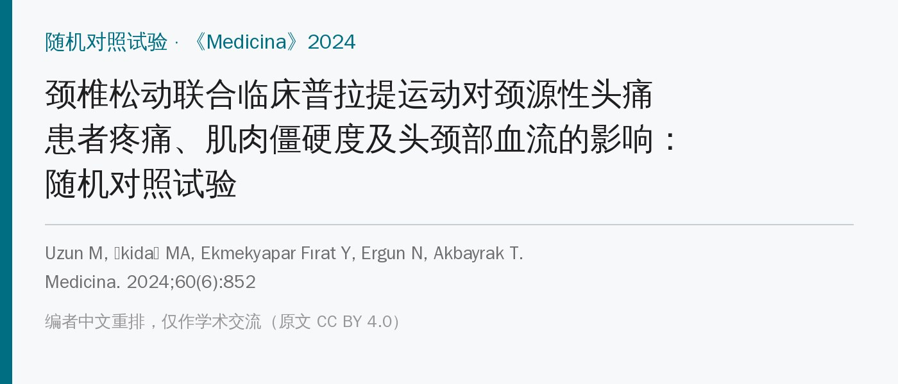
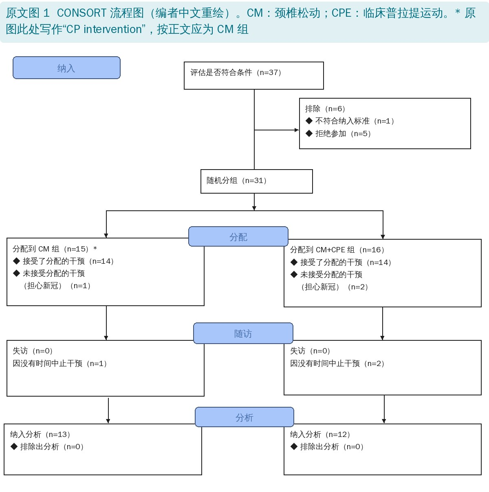
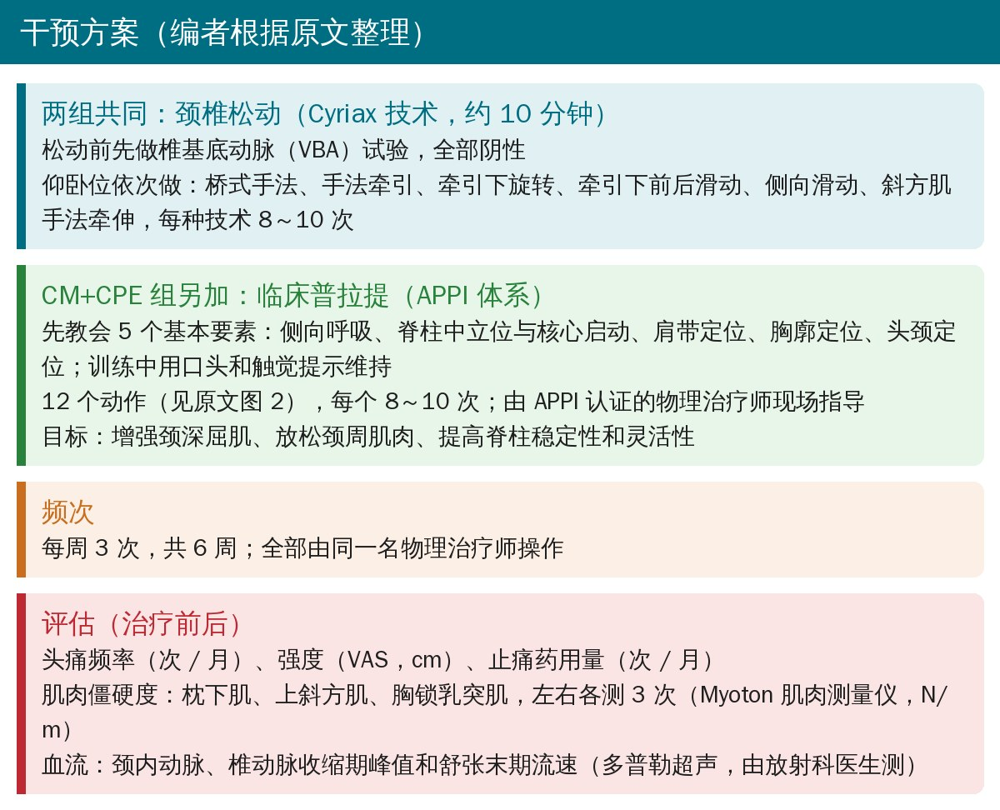
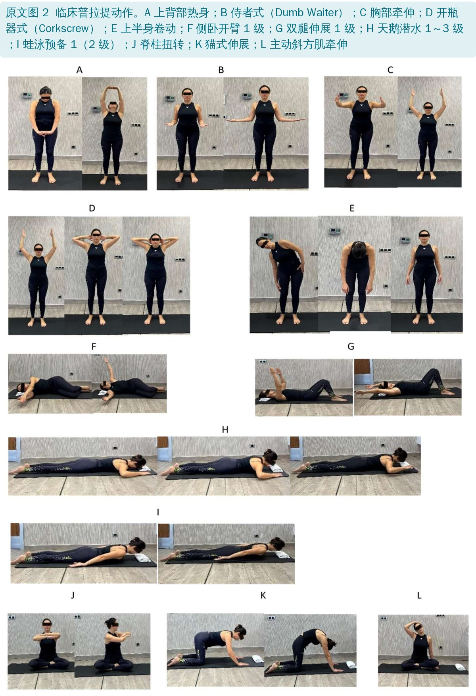
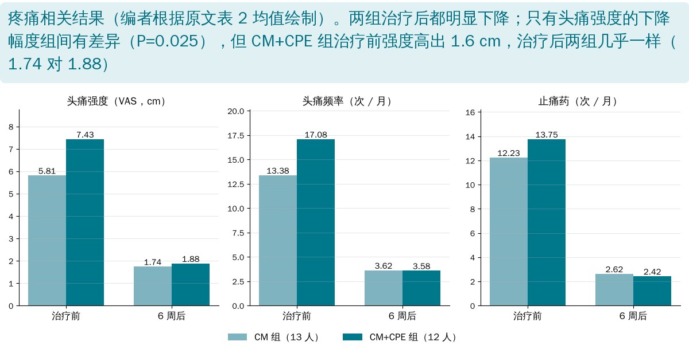

🔖原文信息（编者中文重排）
📚 文献信息
▪ Uzun M, İkidağ MA, Ekmekyapar Fırat Y, Ergun N, Akbayrak T. The Effects of Cervical Mobilization with Clinical Pilates Exercises on Pain, Muscle Stiffness and Head and Neck Blood Flow in Cervicogenic Headache: Randomized Controlled Trial. Medicina. 2024;60(6):852. doi:10.3390/medicina60060852
▪ 作者单位：土耳其 SANKO 大学物理治疗与康复系、放射科、神经科，以及 Hacettepe 大学
▪ 研究类型：随机对照试验，25 名颈源性头痛患者，治疗 6 周；ClinicalTrials.gov 注册号 NCT05883319
颈源性头痛（CHA）是一种起源于上颈段结构的继发性头痛：多为单侧，从枕颈部放射到耳部和颧部，呈压迫样、有时搏动样，颈部动作可诱发，可持续数天到数周。这类患者常有颈椎活动度下降、颈深屈肌无力、头前伸姿势和颈部肌肉僵硬。
手法治疗是 CHA 指南推荐的方法，以往研究多用 Mulligan SNAG、Maitland 等上颈段松动；运动方面有颅颈屈曲、颈部稳定训练等。作者想回答两个问题：在颈椎松动的基础上加临床普拉提，效果会不会更好？以及这些治疗会不会改变头颈部动脉血流？作者称这是第一项在 CHA 中使用 Cyriax 颈椎松动、也是第一项用临床普拉提治疗 CHA 的研究。

🔖原文图 1：CONSORT 流程图（编者中文重绘）
• 对象：神经科门诊由专科医生诊断的 CHA 患者，18～65 岁，近几个月未接受过（除止痛药外的）药物或物理治疗；排除头痛手术史、严重心脏病史或手术史、恶性肿瘤史、癫痫
• 分组：按年龄、性别和头痛病程用最小化法随机分为 CM 组和 CM+CPE 组。37 人筛查，31 人随机，6 人中途退出（3 人担心新冠、3 人没时间），最终 CM 组 13 人、CM+CPE 组 12 人纳入分析
• 评估：治疗前和 6 周后；血流由一名有 20 年经验的放射科医生测，其余指标由同一名物理治疗师测
• 统计：组内前后比较用 Wilcoxon 符号秩检验，组间比较变化量用 Mann-Whitney U 检验

🔖干预方案（编者根据原文整理）
• 患者仰卧在治疗床上，松动前先做椎基底动脉（VBA）试验，本研究全部阴性
• 依次做：桥式手法、手法牵引、牵引下旋转、牵引下前后滑动、侧向滑动、斜方肌手法牵伸
• 每种技术 8～10 次，共约 10 分钟；每周 3 次，共 6 周
澳大利亚物理治疗与普拉提学院（APPI）把传统普拉提改良成适合临床使用的版本。先把 5 个基本要素教会患者，训练全程用口头和触觉提示维持：
• 侧向呼吸：吸气时胸廓向两侧扩张
• 脊柱中立位与核心启动
• 肩带定位、胸廓定位、头颈定位

🔖原文图 2：临床普拉提动作（A～L）
| 编号 | 动作 | 体位 |
|---|---|---|
| A | 上背部热身 | 站立 |
| B | 侍者式（Dumb Waiter） | 站立 |
| C | 胸部牵伸 | 站立 |
| D | 开瓶器式（Corkscrew） | 站立 |
| E | 上半身卷动 | 站立 |
| F | 侧卧开臂 1 级 | 侧卧 |
| G | 双腿伸展 1 级 | 仰卧屈膝 |
| H | 天鹅潜水 1～3 级 | 俯卧 |
| I | 蛙泳预备 1（2 级） | 俯卧 |
| J | 脊柱扭转 | 盘腿坐 |
| K | 猫式伸展 | 四点跪 |
| L | 主动斜方肌牵伸 | 盘腿坐 |
临床普拉提动作一览（编者根据原文图 2 整理；体位为编者根据照片补充）
• 每个动作 8～10 次，由 APPI 认证的物理治疗师现场指导
• 设计目标：增强颈深屈肌，放松颈周肌肉，提高脊柱稳定性和灵活性
• 作者在讨论中说明：动作中靠颈深屈肌维持颈部稳定，靠菱形肌、中下斜方肌和前锯肌稳定肩胛，同时让上斜方肌和胸肌保持在拉长位，全程维持良好姿势
| CM 组（13 人） | CM+CPE 组（12 人） | P 值 | |
|---|---|---|---|
| 年龄（岁） | 34.9 ± 9.214 | 30.25 ± 9.016 | 0.276ᵇ |
| 头痛病程（年） | 3.38 ± 2.142 | 3.25 ± 2.454 | 0.782ᵇ |
| BMI（kg/m²） | 21.432 ± 4.896 | 20.612 ± 3.946 | 0.744ᵇ |
| 女性，n（%） | 9（69） | 9（75） | 0.748ᵃ |
| 男性，n（%） | 4（31） | 3（25） |
原文表 1：人口学资料和头痛病程（中文翻译）
数值为均值 ± 标准差；CM：颈椎松动组；CPE：临床普拉提运动组；ᵃ 卡方检验；ᵇ Mann-Whitney U 检验。

🔖疼痛相关结果（编者根据原文表 2 均值绘制）
• 两组都明显改善：头痛频率从每月 13～17 次降到约 3.6 次，止痛药从每月 12～14 次降到约 2.5 次；三块肌肉的僵硬度都下降；颈内动脉和椎动脉血流速度都上升（组内均 P < 0.05）
• 组间差异只有 2 项：头痛强度下降幅度 CM+CPE 组更大（5.55 对 4.07 cm，P = 0.025），左侧胸锁乳突肌僵硬度下降更多（43.33 对 23.31 N/m，P = 0.044）
• 头痛频率、止痛药用量、其余 5 处肌肉僵硬度、4 项血流指标，组间都没有差异
作者结论：在颈源性头痛的非药物治疗中，颈椎松动加临床普拉提可能更有益。
• 没有“不治疗”或假治疗对照：两组都做了松动，头痛又有自然波动和回归均值，组内改善不能全算在治疗头上；作者说“证明手法有效”说过头了
• 组间唯一的疼痛差异可能来自基线不同：CM+CPE 组治疗前头痛强度高 1.6 cm（7.43 对 5.81），治疗后两组几乎一样（1.88 对 1.74），“下降更多”很可能只是起点更高
• 多重比较：组间比较了 13 个指标，只有 2 个 P 略小于 0.05，没有校正，偶然出现的可能性不小
• 剂量不对等：CM+CPE 组每次多了一套 12 个动作的普拉提，治疗时间和治疗师接触都更多
• 设盲不清楚：除血流外的指标都由同一名物理治疗师测，治疗也由同一名物理治疗师做，原文没说测量者是否知道分组
• 血流“增加”临床意义很小：颈内动脉收缩期峰值只增加约 1.3～1.7 cm/s（约 1%），在多普勒测量误差范围内
• 样本小、没随访、按实际完成者分析：25 人，6 周后就结束；退出的 6 人没有纳入分析
• 样本量算不通：原文说按效应量 d = 0.8、α = 5%、检验效能 95%，每组只需 9 人。按两独立样本比较，这些参数需要每组约 42 人（效能 80% 也要约 26 人）；即使按配对比较也要约 23 人
• 右侧胸锁乳突肌数据疑似抄错：CM 组右侧胸锁乳突肌治疗后 210.08 ± 22.29，和左侧完全相同；按前后均值算变化应为 32.61，表中写 34.30
• 左上斜方肌变化量对不上：CM+CPE 组 332.42 − 275.50 = 56.92，表中写 56.58
• 组内 P 值都是“最小可能值”：疼痛、僵硬度和颈内动脉收缩期峰值的组内 P 值，CM 组全是 0.001、CM+CPE 组全是 0.002。用 Wilcoxon 检验（正态近似），13 人和 12 人能得到的最小 P 值正好约为 0.0015 和 0.0022，意味着每一位患者的每一项指标都改善了，包括血流速度，这在小样本中相当少见
• 流程图组名写错：原文图 1 左侧写成“CP intervention”，按正文应为 CM 组
• 缩写不统一：颈源性头痛在摘要里混用 CHA 和 CGH；摘要说“SKM 僵硬度”有组间差异，表中是左侧 SCM（胸锁乳突肌）
• 注册时间存疑：注册号 NCT05883319 标注日期为 2022 年 3 月 22 日，但伦理审批在 2020 年、退出原因涉及新冠，研究可能在注册前就已开始；而按 ClinicalTrials.gov 的编号顺序，NCT0588 开头的注册号大约对应 2023 年年中
• 结论超出数据：结论说颈椎松动能“增加颈部血流”，但这只是组内前后比较、增幅很小，且没有对照
• 小错：表 1 “Famele”应为 Female；表 2 “X ± SS”应为 X ± SD；“three days 3 times a week”重复
• 颈源性头痛可以“手法 + 运动”一起上：这篇两组都明显改善，普拉提的额外好处不确定，但运动本身对颈深屈肌、姿势和长期管理有价值
• 普拉提的抓手是 5 个基本要素：侧向呼吸、脊柱中立、肩带、胸廓、头颈定位，先教会再加动作；12 个动作大多徒手、垫上即可完成，适合做成家庭训练
• 颈椎松动前做安全筛查：本研究先做 VBA 试验；临床上更重要的是问清楚头晕、视物异常、构音障碍等危险信号
• 别被“血流增加”带偏：1% 左右的血流变化没有临床意义；也不能据此说手法改善脑供血
• 评估别只看疼痛强度：头痛频率、止痛药用量更贴近患者生活，这篇里这两项组间并无差异
| 指标 | CM 组 | pᵃ | CM+CPE 组 | pᵃ | Z | pᵇ |
|---|---|---|---|---|---|---|
| 头痛频率（次 / 月） | 前 13.38 ± 7.54 后 3.62 ± 2.78 变化 9.769 ± 5.433 | 0.001* | 前 17.08 ± 10.71 后 3.58 ± 2.99 变化 13.5 ± 8.969 | 0.002* | −0.982 | 0.325 |
| 头痛强度（cm） | 前 5.81 ± 1.18 后 1.74 ± 1.41 变化 4.072 ± 1.076 | 0.001* | 前 7.43 ± 1.04 后 1.88 ± 1.14 变化 5.55 ± 1.720 | 0.002* | −2.232 | 0.025* |
| 止痛药（次 / 月） | 前 12.23 ± 10.94 后 2.62 ± 3.30 变化 9.615 ± 8.713 | 0.001* | 前 13.75 ± 12.70 后 2.42 ± 2.39 变化 11.33 ± 11.364 | 0.002* | −0.491 | 0.623 |
| 右枕下肌（N/m） | 前 331.85 ± 98.75 后 254.23 ± 67.46 变化 77.61 ± 85.81 | 0.001* | 前 304.92 ± 70.98 后 232.08 ± 54.45 变化 72.83 ± 44.29 | 0.002* | −0.598 | 0.549 |
| 左枕下肌（N/m） | 前 326.69 ± 98.78 后 237.69 ± 45.17 变化 89 ± 94.36 | 0.001* | 前 302.83 ± 76.13 后 236 ± 47.94 变化 66.83 ± 46.99 | 0.002* | −0.163 | 0.870 |
| 右上斜方肌（N/m） | 前 291.08 ± 47.40 后 243.62 ± 40.39 变化 47.461 ± 26.38 | 0.001* | 前 319.42 ± 55.64 后 268.58 ± 51.25 变化 50.83 ± 17.23 | 0.002* | −1.008 | 0.313 |
| 左上斜方肌（N/m） | 前 299.08 ± 53.87 后 255.46 ± 46.01 变化 43.61 ± 30.30 | 0.001* | 前 332.42 ± 68.32 后 275.50 ± 54.20 变化 56.58 ± 27.87 | 0.002* | −1.142 | 0.253 |
| 右胸锁乳突肌（N/m） | 前 242.69 ± 45.31 后 210.08 ± 22.29 变化 34.30 ± 36.88 | 0.001* | 前 246.50 ± 45.83 后 204.83 ± 28.02 变化 41.66 ± 21.70 | 0.002* | −1.715 | 0.086 |
| 左胸锁乳突肌（N/m） | 前 233.38 ± 21.9 后 210.08 ± 22.29 变化 23.307 ± 12.31 | 0.001* | 前 253.25 ± 58.77 后 209.92 ± 52.15 变化 43.33 ± 29.61 | 0.002* | −2.013 | 0.044* |
| 颈内动脉 PS（cm/s） | 前 111.36 ± 14.86 后 112.62 ± 14.95 变化 1.261 ± 1.025 | 0.001* | 前 118.89 ± 13.11 后 120.64 ± 13.22 变化 1.745 ± 1.104 | 0.002* | −1.198 | 0.231 |
| 颈内动脉 ED（cm/s） | 前 37.62 ± 7.63 后 38.46 ± 7.27 变化 0.842 ± 0.902 | 0.011* | 前 40.31 ± 4.38 后 42.40 ± 5.462 变化 2.087 ± 3.207 | 0.005* | −1.306 | 0.191 |
| 椎动脉 PS（cm/s） | 前 82.75 ± 16.35 后 83.39 ± 16.72 变化 0.638 ± 0.975 | 0.034* | 前 70.720 ± 15.41 后 71.49 ± 15.33 变化 0.775 ± 0.907 | 0.010* | −0.326 | 0.744 |
| 椎动脉 ED（cm/s） | 前 27.43 ± 6.80 后 28.05 ± 6.86 变化 0.623 ± 0.709 | 0.012* | 前 25.85 ± 6.50 后 27.01 ± 6.40 变化 1.160 ± 1.382 | 0.015* | −0.708 | 0.479 |
原文表 2：组内和组间结局指标比较（中文翻译）
均值 ± 标准差。* p < 0.05；pᵃ 为组内比较（Wilcoxon 检验），pᵇ 为组间比较（Mann-Whitney U 检验）。CM：颈椎松动组；CPE：临床普拉提运动组；PS：收缩期峰值流速；ED：舒张末期流速。
欢迎关注悦美力公众号，获取更多物理治疗的专业知识！
📄参考文献：
Uzun M, İkidağ MA, Ekmekyapar Fırat Y, Ergun N, Akbayrak T. The Effects of Cervical Mobilization with Clinical Pilates Exercises on Pain, Muscle Stiffness and Head and Neck Blood Flow in Cervicogenic Headache: Randomized Controlled Trial. Medicina. 2024;60(6):852. doi:10.3390/medicina60060852
原文以 CC BY 4.0 许可发表。本文为学术交流用的中文解读：原文图 1 按原意用中文重绘，图 2 原样引用并加中文图注，表 1、表 2 为中文翻译，方案卡和结果图为编者根据原文整理绘制。